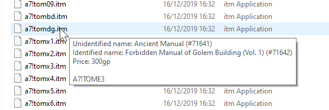
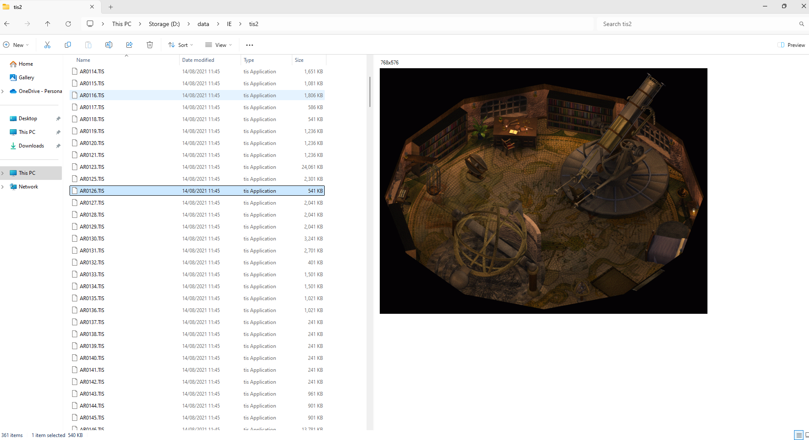

Infinity Engine Shell Extensions
What is the Infinity Engine?
The Infinity Engine is a video game engine created by BioWare in the late 1990s, used to power the Baldur's Gate series, the Icewind Dales series and Planescape: Torment.What is a shell extension?
The Windows File Explorer provides defined extention points where additional functionality can be added via the use of "shell extensions" - essentially plugins to allow the application to deal with additional filetypes. Shell extensions allow customising tooltips, adding thumbnail previews for additional image types, adding metadata columns (e.g. EXIF information about the camera and location) and adding new entries into the right-click menu.What are the Infinity Engine Shell Extensions?
The Infinity Engine Shell Extensions is a collection of plugins extending File Explorer with knowledge of the Infinity Engine file formats, making the process of developing mods easier and quicker. The shell extensions are split into categories:Tooltips
Tooltips appear when hovering over a file in File Explorer.

Graphical Previews
Graphical Previews appear in the details pane of File Explorer when a file is selected.

Text Previews
Text Previews appear in the details pane of File Explorer when a file is selected.
What files are supported?
| File | Tooltip | Preview |
| 2DA | Yes | Yes |
| ACM | ||
| ARE | Yes | |
| BAF | Yes | Yes |
| BAM | Yes | |
| BCS | Yes | Yes |
| BIF | ||
| BMP | ||
| CHR | Yes | |
| CHU | Yes | |
| CRE | Yes | |
| DLG | Yes | |
| EFF | Yes | |
| FNT | ||
| GAM | Yes | |
| GLSL | Yes | Yes |
| GUI | Yes | Yes |
| IDS | Yes | Yes |
| INI | Yes | Yes |
| ITM | Yes | |
| KEY | Yes | |
| LUA | Yes | Yes |
| MAZE | ||
| MENU | Yes | |
| MOS | Yes | Yes (MOS and MOSC) |
| MUS | Yes | Yes |
| MVE | ||
| PLT | ||
| PNG | ||
| PRO | Yes | |
| PVRZ | ||
| SAV | ||
| SQL | Yes | Yes |
| SPL | Yes | |
| SRC | ||
| STO | Yes | |
| TIS | Yes | Yes |
| TLK | Yes | |
| TOH | ||
| TOT | ||
| TTF | ||
| VAR | Yes | |
| VEF | Yes | |
| VVC | Yes | |
| WAV/WAVC | ||
| WBM | ||
| WED | Yes | |
| WFX | Yes | |
| WMP | Yes | |
| D | Yes | |
| TRA | Yes | |
| TP2 | Yes |
Prerequisites
- .NET Framework 4.7+
- Powershell
Installation
Run the installer (ieshellex.exe)Select a location to install the shell extensions
Note: You may need to reboot after installation to for all the shell extensions to load
Uninstallation
The shell extensions can be uninstalled via the Windows Add/Remove programs area of the Control Panel / Settings.Customizing output
ScriptsThe content of the tooltips provided by the infotip shell extensions is generated by a series of PowerShell scripts, one script per file type. The content of the tooltips can be customised by editing each script file. Scripts are located in the config directory under the install location.
Well-formatted strref values referenced in the return from the script are automatically looked up in a TLK file. The format to trigger this behaviour is an @ preceeding the normal PowerShell variable escaping e.g. @${111} would trigger the shell extensions to automatically lookup strref 111.
tlkLocations.xml
The shell extensions support multiple TLK locations in a hierarchy, and will search 'up' the directory tree from the file location until a matching TLK specification is found. TLK specifications are located in the tlkLocations.xml file location in the config directory in the install location. The tlkLocations.xml file can be cutomised to include the locations specific to your installations and mod directories, allowing any TLK references to reference the correct TLK file.
A sample tlkLocations.xml file is displayed below, it contains three TLK file references.
• Any file with a TLK reference within the D:\mymods\AmelyssanRomance directory will use the D:\Games\IE\BG2EE\00783\lang\en_US\dialog.tlk TLK file.
• Any file with a TLK reference within the D:\ drive will use the D:\Games\IE\sod\00806\lang\en_US\dialog.tlk TLK file.
• Any file with a TLK reference within the C:\drive will use the D:\Games\IE\BG1\dialog.tlk TLK file.
<?xml version="1.0" encoding="ibm850" ?>
<ArrayOfTlkLocationData xmlns:xsi="http://www.w3.org/2001/XMLSchema-instance" xmlns:xsd="http://www.w3.org/2001/XMLSchema">
<TlkLocationData>
<TlkPath>D:\Games\IE\BG2EE\00783\lang\en_US\dialog.tlk</TlkPath>
<ApplyPath>D:\mymods\AmelyssanRomance</ApplyPath>
</TlkLocationData>
<TlkLocationData>
<TlkPath>D:\Games\IE\sod\00806\lang\en_US\dialog.tlk</TlkPath>
<ApplyPath>D:\</ApplyPath>
</TlkLocationData>
<TlkLocationData>
<TlkPath>D:\Games\IE\BG1\dialog.tlk</TlkPath>
<ApplyPath>C:\</ApplyPath>
</TlkLocationData>
</ArrayOfTlkLocationData>
TilesetsThe TIS Preview shell extension shows a graphical representation of the image information contained with TIS files. TIS files only contain graphical information, they do not contain any dimension information, i.e. it is not possible to determine the dimensions of an image from only a TIS file.
In order to display a TIS file with the expected dimensions, the TIS Preview shell extension checks areaDatas.xml (in the config directory in the install location). The shell extension matches the TIS filename to the filename in areaDatas.xml and then reads the image width and height from there. If the filename is not foud in areaData.xml the TIS Preview defaults to 64x64 pixels (i.e. a single tileset block). The default areaDatas.xml file contains image dimension information for Baldur's Gate (including TotS) and Baldur's Gate II (including ToB).
You can edit areaData.xml with image dimension information for any custom areas, in order to provide information to facilitate a correctly rendered image.
A sample areasData.xml file is displayed below, it contains two area definitions.
• Any file named AR0002.tis will be displayed with a width of 14 blocks (896 pixels) and a height of 10 blocks (640 pixels)
• Any file named AR0100.tis will be displayed with a width of 67 blocks (4288 pixels) and a height of 50 blocks (3200 pixels)
Note: 1 block is 64 pixels.
<?xml version="1.0" encoding="ibm850" ?>
<ArrayOfAreaData xmlns:xsi="http://www.w3.org/2001/XMLSchema-instance" xmlns:xsd="http://www.w3.org/2001/XMLSchema">
<AreaData>
<Game>BG1 TotS</Game>
<Filename>AR0002</Filename>
<Filesize>4238</Filesize>
<Width>14</Width>
<Height>10</Height>
</AreaData>
<AreaData>
<Game>BG1 TotS</Game>
<Filename>AR0100</Filename>
<Filesize>82290</Filesize>
<Width>67</Width>
<Height>50</Height>
</AreaData>
</ArrayOfAreaData>
Notes:
If multiple entries with the same name are located in the areaDatas.xml file the earliest occurance will be used.
The current areaDatas.xml implementation differentiates between files based solely on the filename - this will cause incorrect image sizes e.g. for Baldur's Gate compared to Baldur's Gate II. It is intended to use the filesize information to make this differentiate in the future.